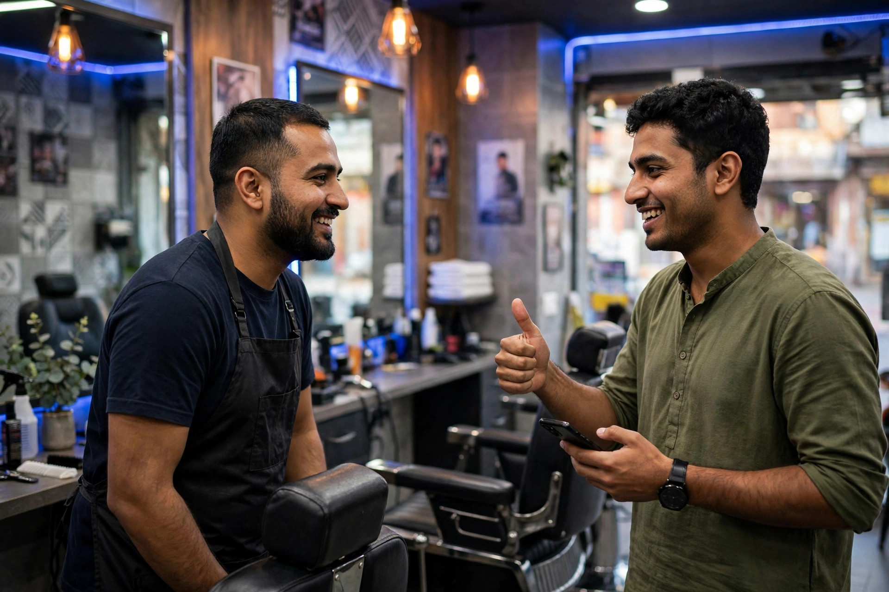

Imagine a customer in Mianwali comparing two businesses on Google. Both are nearby, both offer the same service, and both are open. The one with a set of recent, believable reviews, answered politely by the owner, usually wins the call. Reviews are modern word of mouth, written down where every future customer can read it.
That power makes reviews worth handling properly. Done honestly, they reward good service and steadily strengthen your whole online presence. Done with shortcuts, they can be removed, damage your reputation, and leave you worse off than having few reviews at all. This guide takes the honest route, step by step.
Earn Reviews by Making the Experience Worth Mentioning
No asking technique can replace service itself. Reviews grow most naturally when a business does the basics well, finishes the job properly, communicates clearly and treats people with respect. Small touches are often what reviewers actually mention: being seen on time, a clear explanation, a fair bill, or help given after the sale.
If reviews are rare, look first at the experience rather than the asking. Is there a moment in your process where customers are clearly pleased? That is where a polite request belongs, and it is also a sign your service is giving people something genuine to describe.

Ask at the Right Moment and Make It Easy
Timing matters. Ask when the work is complete and the customer is satisfied, not before you have delivered anything. Keep the request short and free of pressure: thank them, say an honest Google review would help your business, and offer the link. Most people who intend to help will do it if the process takes a minute.
- Use your Google review link in messages and on receipts where suitable.
- A small QR code at the counter can help customers in the shop.
- Train staff to ask in the same polite way, once.
- Never ask only for five stars; ask for an honest review.
Reviews connect closely with your map presence, so read this alongside our Google Maps guide for Mianwali. A steady trickle of new reviews over months looks far more believable than a sudden flood.
Reply to Every Review Like a Professional
Replies are read by future customers as closely as the reviews themselves. For a positive review, thank the person by name if they gave one, mention the service briefly, and keep it warm and short. For a mixed review, thank them, note the point they raised, and say what you will look at. Replies show an owner who is present and who cares.
For a negative review, slow down. Do not argue, do not accuse the reviewer of lying in public, and do not share private details about their visit. Acknowledge the experience they describe, apologise that they left unhappy where that is appropriate, and invite direct contact. Other readers judge your character from that reply, often more than from the complaint itself.
Avoid the Shortcuts That Put Everything at Risk
Buying reviews, writing them yourself, asking relatives to pose as customers, or offering rewards for positive ratings all break the trust reviews depend on, and Google can remove such reviews or act against a profile. Selective asking, where only happy customers are directed to Google and unhappy ones elsewhere, is also a poor practice that customers notice.
For broader help building a trustworthy local presence, see our SEO services in Mianwali page. Please note: Zaheer Seo Expert is based in Layyah and has no office in Mianwali. We support Mianwali businesses from Layyah, online and by phone, and we only recommend review methods we would be comfortable explaining to any customer.
Turn Feedback Into Better Service
Reviews are also free market research. If several people mention slow response, confusing bills or difficulty parking, treat that as a pattern worth fixing, not as an insult. When you fix a repeated complaint, later reviews often improve on their own, and your replies can honestly mention the change you made.
Finally, make reviews part of the weekly rhythm of the business rather than a special campaign. One person checking new reviews, replying, and noting repeated comments in a staff meeting keeps the habit alive without much effort, and keeps service problems visible while they are still small and easy to fix.
In a city like Mianwali, where personal reputation travels fast, Google reviews simply make that reputation visible to strangers. Earn them honestly, answer them graciously, and they will keep working for your business long after each individual job is done.

Frequently Asked Questions
How should I ask a customer for a Google review?
Ask politely at the end of a good experience, keep it short, and share your review link or QR code so it takes a minute. Thank the customer whether or not they leave a review, and never pressure anyone.
Can I offer a discount in exchange for a positive review?
No. Reviews should be honest and freely given. Offering rewards for positive reviews, writing reviews yourself, or asking staff and family to pose as customers can damage trust and lead Google to remove reviews.
What should I write when replying to a negative review?
Stay calm and brief. Thank the person for the feedback, acknowledge the issue without arguing in public, and invite them to contact you directly so you can understand and, where possible, put it right.
Where is Zaheer Seo Expert when helping with Mianwali reviews?
Zaheer Seo Expert is based in Layyah and has no office in Mianwali. Review and profile guidance for Mianwali businesses is given online and by phone from Layyah.
Want More Customers From Google?
Call 0327 7350830 or email seozaheer14@gmail.com. Zaheer Seo Expert, Layyah - Rajan Shah Road, Rana Nagar, Chak 116 TDA, Pakistan. Open 24 hours.
Get Your SEO Strategy →